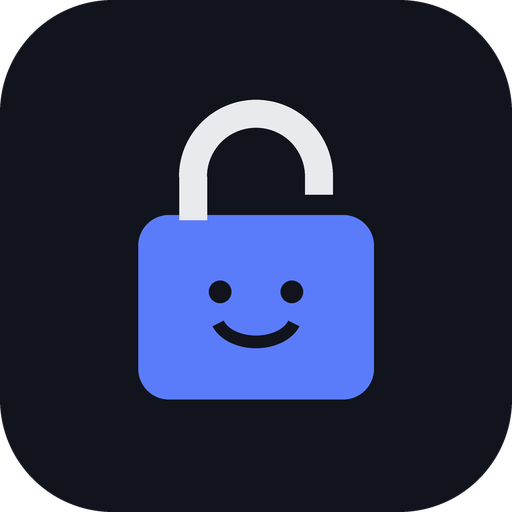

PC Unlock Host
—
Sesión remota activa
1 Código de la app
En el iPhone: PC Unlock → Ajustes → Código para la ESP → Copiar código. Pasalo a esta compu (por ejemplo mandándotelo por WhatsApp Web o por mail) y pegalo acá. Es el mismo código de la ESP: trae el servidor MQTT y la llave de Face ID.
✔ Configurado.
2 Código de verificación
En el iPhone: Ajustes → Compu (pantalla remota). Tiene que aparecer exactamente este código. Si coincide, tocá Coinciden en el iPhone. Si no coincide, no lo confirmes.
—
Opciones
Se activa en la versión instalada.
La compu bloqueada: —. Windows no deja ver ni controlar la pantalla de bloqueo; para eso la app usa el botón Desbloquear (por la ESP).